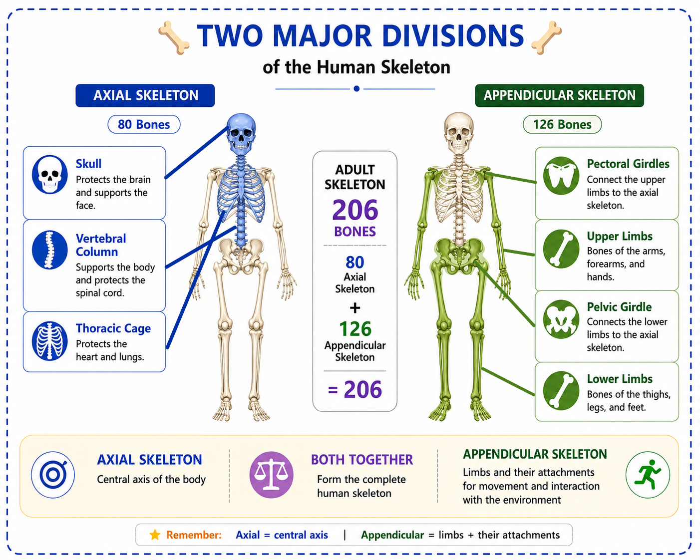
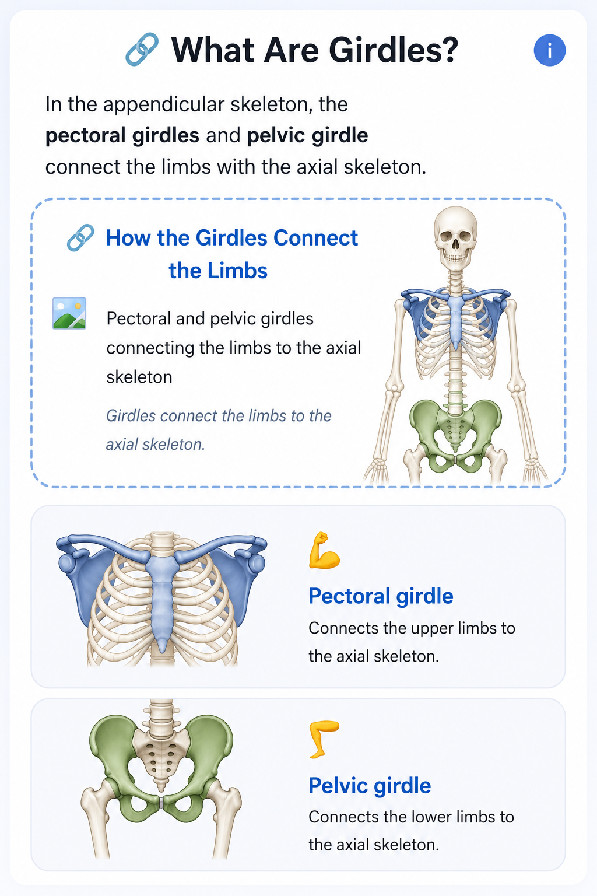

🦴 Divisions of the Skeleton
The adult human skeleton usually contains 206 bones. These bones are organized into two major divisions: the axial skeleton and the appendicular skeleton.
🦴 The Two Major Divisions
The skeleton is divided into two major parts. The axial skeleton forms the central axis of the body, while the appendicular skeleton includes the limbs and the structures that attach them to the axial skeleton.
Two Major Divisions of the Skeleton

The adult human skeleton is organized into axial and appendicular divisions.
Axial Skeleton
The central axis of the body.
The axial skeleton forms the body's central framework. It includes the bones of the head, the vertebral column, and the thoracic cage.
Appendicular Skeleton
Limbs and their attachments.
The appendicular skeleton includes the upper and lower limbs together with the girdles that connect them to the axial skeleton.

🔢 How Many Bones?
In a typical adult skeleton, the two divisions contain a total of 206 bones.
⚖️ Axial vs Appendicular
| Feature | Axial | Appendicular |
|---|---|---|
| Main idea | Central axis | Limbs + attachments |
| Bone count | 80 | 126 |
| Includes | Skull, vertebral column, thoracic cage | Girdles, upper limbs, lower limbs |
| Main role | Support and protection | Movement and locomotion |
🧠 Remember
📌 Quick Revision
✅ The adult human skeleton typically has 206 bones.
✅ The skeleton has two major divisions: axial and appendicular.
✅ The axial skeleton forms the body's central axis.
✅ The axial skeleton contains 80 bones.
✅ The appendicular skeleton contains the limbs and their attachments.
✅ The appendicular skeleton contains 126 bones.
✅ Together: 80 + 126 = 206.
❓ Lesson Quiz
Ready to test your understanding of the divisions of the skeleton?
Complete the quiz to reinforce what you have learned in Lesson 3.1.